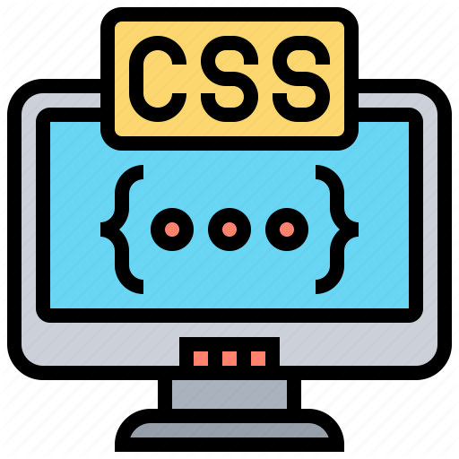

Left
Pengertian CSS (Cascading Style Sheet)
Middle
CSS adalah bahasa Cascading Style Sheet dan biasanya digunakan untuk mengatur tampilan elemen yang tertulis dalam bahasa markup, seperti HTML. CSS berfungsi untuk memisahkan konten dari tampilan visualnya di situs.
CSS dibuat dan dikembangkan oleh W3C (World Wide Web Consortium) pada tahun 1996 untuk alasan yang sederhana. Dulu HTML tidak dilengkapi dengan tags yang berfungsi untuk memformat halaman. Anda hanya perlu menulis markup untuk situs.
HTML dan CSS memiliki keterikatan yang erat. Karena HTML adalah bahasa markup (fondasi situs) dan CSS memperbaiki style (untuk semua aspek yang terkait dengan tampilan website), maka kedua bahasa pemrograman ini harus berjalan beriringan.

Kelebihan CSS Mudah bagi Anda untuk mengetahui mana website yang menggunakan CSS dan mana yang tidak.
Dengan CSS, Anda dapat mengatur tampilan semua aspek pada file yang berbeda, lalu menentukan style, kemudian mengintegrasikan file CSS di atas markup HTML. Alhasil, markup HTML bisa lebih mudah di-maintain.
Singkatnya, dengan CSS, Anda tidak perlu mendeskripsikan tampilan dari masing-masing elemen secara berulang-ulang.
Right
CSS dibuat untuk dapat bekerja bersama dengan bahasa markup seperti HTML. Biasanya CSS digunakan untuk mengatur tampilan halaman. Ada tiga style di CSS, dan untuk menerapkan CSS di banyak halaman pada waktu bersamaan, gunakan External style. Saat ini sudah banyak website yang menggunakan CSS. Hal ini dikarenakan CSS adalah salah satu bahasa markup yang diwajibkan ada.
Artikel Responsive Lain :